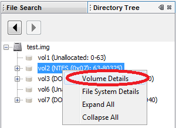
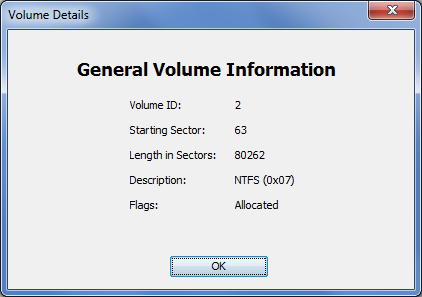

The Volume Details window shows you information about a volume. It shows information such as the starting sector, length, and description. You can view the information by right clicking on a volume in the tree and choosing "Volume Details".

An example is shown here:
